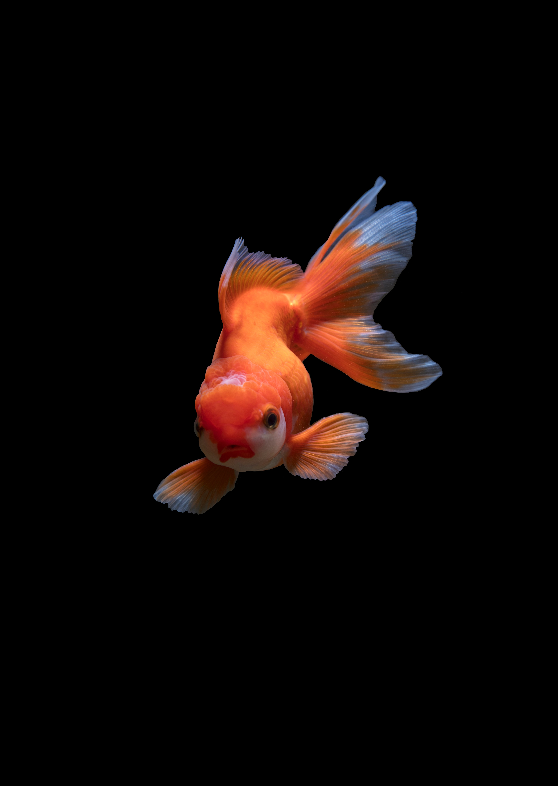

Fish are aquatic, craniate, gill-bearing animals that lack limbs with digits. They form a sister group to the tunicates, together forming the olfactores. Included in this definition are the living hagfish, lampreys, and cartilaginous and bony fish as well as various extinct related groups. Around 99% of living fish species are ray-finned fish, belonging to the class Actinopterygii, with over 95% belonging to the teleost subgrouping.
The earliest organisms that can be classified as fish were soft-bodied chordates that first appeared during the Cambrian period. Although they lacked a true spine, they possessed notochords which allowed them to be more agile than their invertebrate counterparts. Fish would continue to evolve through the Paleozoic era, diversifying into a wide variety of forms. Many fish of the Paleozoic developed external armor that protected them from predators. The first fish with jaws appeared in the Silurian period, after which many (such as sharks) became formidable marine predators rather than just the prey of arthropods.
Most fish are ectothermic ("cold-blooded"), allowing their body temperatures to vary as ambient temperatures change, though some of the large active swimmers like white shark and tuna can hold a higher core temperature.[1][2] Fish can acoustically communicate with each other, most often in the context of feeding, aggression or courtship.[3]
Fish are abundant in most bodies of water. They can be found in nearly all aquatic environments, from high mountain streams (e.g., char and gudgeon) to the abyssal and even hadal depths of the deepest oceans (e.g., cusk-eels and snailfish), although no species has yet been documented in the deepest 25% of the ocean.[4] With 34,300 described species, fish exhibit greater species diversity than any other group of vertebrates.[5]
Fish are an important resource for humans worldwide, especially as food. Commercial and subsistence fishers hunt fish in wild fisheries or farm them in ponds or in cages in the ocean (in aquaculture). They are also caught by recreational fishers, kept as pets, raised by fishkeepers, and exhibited in public aquaria. Fish have had a role in culture through the ages, serving as deities, religious symbols, and as the subjects of art, books and movies.
Tetrapods emerged within lobe-finned fishes, so cladistically they are fish as well. However, traditionally fish are rendered paraphyletic by excluding the tetrapods (i.e., the amphibians, reptiles, birds and mammals which all descended from within the same ancestry). Because in this manner the term "fish" is defined negatively as a paraphyletic group, it is not considered a formal taxonomic grouping in systematic biology, unless it is used in the cladistic sense, including tetrapods.[6][7] The traditional term pisces (also ichthyes) is considered a typological, but not a phylogenetic classification.